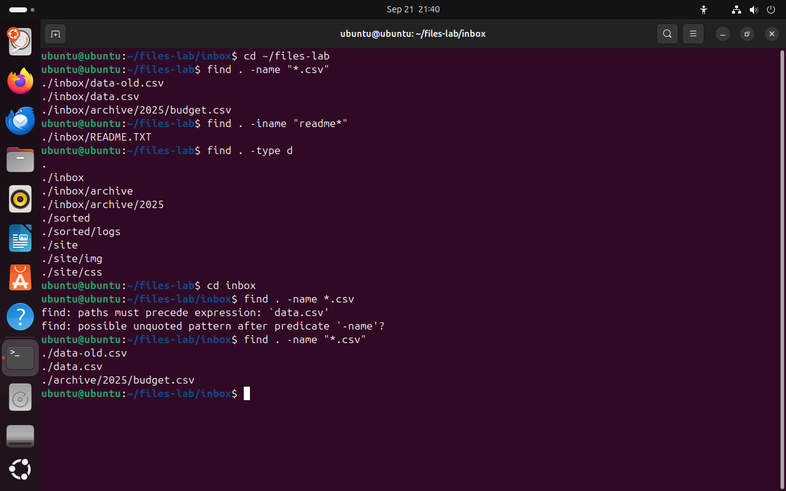
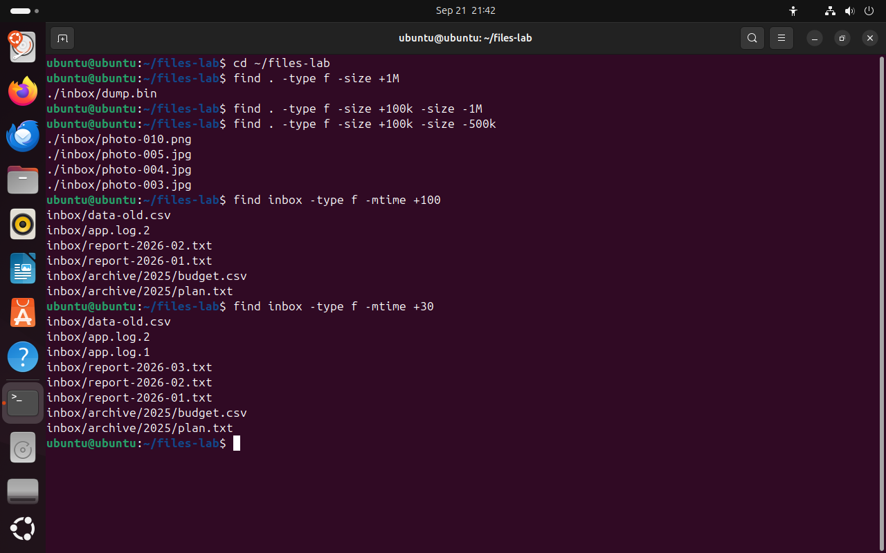
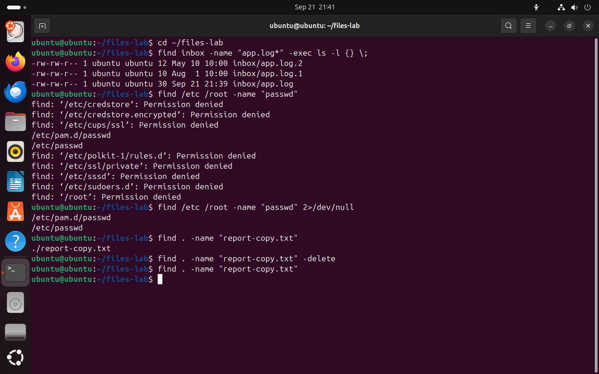
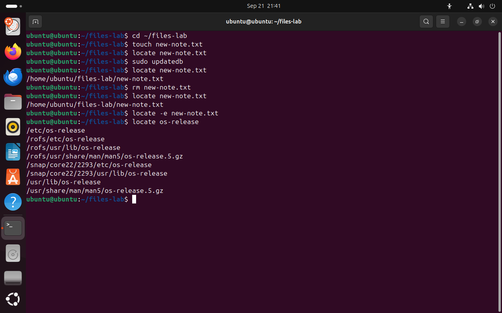
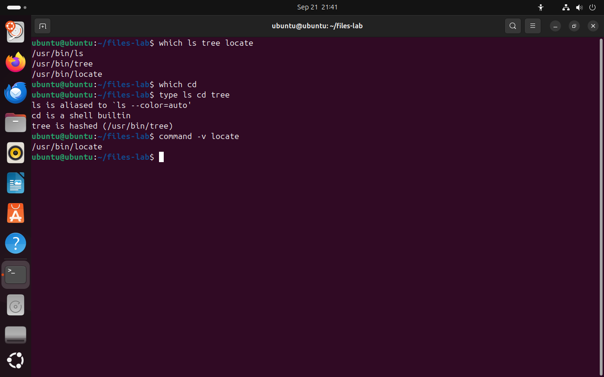

Часть 5 из 7
Поиск файлов
В этой части найдём файлы командой find по имени, типу, размеру и времени изменения, выполним действие над найденными файлами, сравним find с locate и разберём команды which и type.
5.1 find: где искать и что искать
Маска выбирает файлы в одном каталоге. Когда неизвестно, где лежит файл, нужна команда find. Она обходит каталог и все вложенные каталоги и проверяет каждый найденный объект по заданным условиям.
Команда записывается так: сначала один или несколько каталогов, с которых начинается обход, затем условия. В документации find условия называются тестами. Точка означает текущий каталог. Если условий нет, find выводит всё содержимое дерева.
| Условие | Что проверяет |
|---|---|
-name "маска" | имя объекта совпадает с маской; регистр букв учитывается |
-iname "маска" | то же без учёта регистра: README и readme совпадут |
-type f, -type d | объект — обычный файл или каталог |
-size +N, -size -N | размер больше или меньше N |
-mtime +N, -mtime -N | изменён больше или меньше N суток назад |
-maxdepth N | спускаться не глубже N уровней |
Маску в условиях -name и -iname всегда берут в кавычки. Если кавычек нет и в текущем каталоге есть подходящие файлы, оболочка раскроет маску раньше, чем запустится find, и команда получит лишние аргументы. На втором фрагменте снимка это видно: в каталоге inbox строка find . -name *.csv превращается в find . -name data-old.csv data.csv, и find сообщает об ошибке.
Скрытые файлы find не пропускает: .settings будет найден так же, как остальные файлы. Этим find отличается от масок оболочки.
cd ~/files-labчто делает
Что делает команда. Переходит в каталог занятия files-lab из любого места.
По частям:
cd- сменить текущий каталог
~/files-lab- куда перейти (путь от домашнего каталога)
find . -name "*.csv"# имена по маске во всём деревечто делает
Что делает команда. Ищет в текущем каталоге и во всех вложенных файлы, имена которых заканчиваются на .csv.
По частям:
find- найти файлы и каталоги в дереве
.- где начать поиск (текущий каталог)
-name "*.csv"- имя совпадает с образцом "*.csv"; в образце можно использовать маску, регистр учитывается
find . -iname "readme*"# без учёта регистрачто делает
Что делает команда. Ищет имена, которые начинаются с readme в любом регистре букв.
По частям:
find- найти файлы и каталоги в дереве
.- где начать поиск (текущий каталог)
-iname "readme*"- имя совпадает с образцом "readme*" без учёта регистра
find . -type d# только каталогичто делает
Что делает команда. Выводит все каталоги дерева, начиная с текущего.
По частям:
find- найти файлы и каталоги в дереве
.- где начать поиск (текущий каталог)
-type d- только каталоги
cd inboxчто делает
Что делает команда. Переходит в каталог inbox, который лежит в текущем каталоге.
По частям:
cd- сменить текущий каталог
inbox- куда перейти
find . -name *.csv# маска без кавычекчто делает
Что делает команда. Маска без кавычек: оболочка раскрывает её раньше find, и find получает лишние аргументы.
По частям:
find- найти файлы и каталоги в дереве
.- где начать поиск (текущий каталог)
-name *.csv- маска без кавычек: оболочка раскроет её до запуска find, и find получит лишние имена
find . -name "*.csv"# маска в кавычкахчто делает
Что делает команда. Ищет в текущем каталоге и во всех вложенных файлы, имена которых заканчиваются на .csv.
По частям:
find- найти файлы и каталоги в дереве
.- где начать поиск (текущий каталог)
-name "*.csv"- имя совпадает с образцом "*.csv"; в образце можно использовать маску, регистр учитывается
- 1find проверяет и вложенные каталоги: budget.csv лежит в archive/2025
- 2-iname не различает регистр: readme* совпало с README.TXT
- 3-type d выводит только каталоги, начиная с самого «.»
{kind=link}

Весь снимок ↗find ищет во всех вложенных каталогах.
Что показывает снимок. find нашёл файлы .csv и в inbox, и в archive/2025; -iname нашёл README.TXT по маске строчными буквами; -type d вывел только каталоги.
Где это пригодится. Когда известно имя или окончание файла, но неизвестен каталог, find обходит всё дерево проекта или домашнего каталога.
- 1маска без кавычек
- 2оболочка подставила data-old.csv data.csv, и find сообщил об ошибке
- 3маска в кавычках передаётся find без изменений
- 4find сравнивает маску с именами во всех каталогах
Без кавычек маску раскрывает оболочка, и find получает лишние аргументы.
Что показывает снимок. Маска без кавычек раскрылась в каталоге inbox раньше, чем запустился find, и команда завершилась ошибкой; в кавычках маска дошла до find.
Где это пригодится. Сообщение paths must precede expression почти всегда означает маску без кавычек. find сам подсказывает это второй строкой.
5.2 Размер и время изменения
Размер в условии -size записывается числом с единицей: c — байты, k — килобайты, M — мегабайты, G — гигабайты. Знак + означает «больше», - — «меньше», число без знака — «ровно». Так находят файлы, которые занимают место на диске, например find ~ -type f -size +100M.
У -size есть особенность, которая видна на первом фрагменте снимка. Перед сравнением find переводит размер файла в указанные единицы и округляет вверх. Фотография размером 120 000 байт — это 118 килобайт, но при подсчёте в мегабайтах она занимает одну целую единицу. Условие -size -1M означает «меньше одной единицы», и ему соответствуют только пустые файлы. Поэтому верхнюю границу указывают в более мелких единицах: -size -500k.
Условие -mtime считает, сколько полных суток прошло с последнего изменения файла. -mtime +30 — изменён больше 30 суток назад, -mtime -1 — за последние сутки. Так находят старые журналы, которые пора архивировать, или файлы, изменённые за последний день. Для точности до минут есть условие -mmin.
Несколько условий подряд объединяются по правилу «и»: объект попадает в вывод, только если прошёл все проверки по порядку. Это похоже на сито из нескольких сеток: каждая следующая сетка задерживает часть того, что прошло через предыдущую.
cd ~/files-labчто делает
Что делает команда. Переходит в каталог занятия files-lab из любого места.
По частям:
cd- сменить текущий каталог
~/files-lab- куда перейти (путь от домашнего каталога)
find . -type f -size +1M# больше 1 МБчто делает
Что делает команда. Ищет обычные файлы размером больше одного мегабайта.
По частям:
find- найти файлы и каталоги в дереве
.- где начать поиск (текущий каталог)
-type f- только обычные файлы
-size +1M- размер больше 1 МБ
find . -type f -size +100k -size -1M# верхняя граница в мегабайтахчто делает
Что делает команда. Ищет файлы больше 100 КБ и меньше одной единицы в мегабайтах; второму условию соответствуют только пустые файлы, поэтому вывод пуст.
По частям:
find- найти файлы и каталоги в дереве
.- где начать поиск (текущий каталог)
-type f- только обычные файлы
-size +100k- размер больше 100 КБ
-size -1M- размер меньше одной единицы в мегабайтах: после округления вверх так выходит только у пустых файлов
find . -type f -size +100k -size -500k# верхняя граница в килобайтахчто делает
Что делает команда. Ищет файлы размером больше 100 КБ и меньше 500 КБ.
По частям:
find- найти файлы и каталоги в дереве
.- где начать поиск (текущий каталог)
-type f- только обычные файлы
-size +100k- размер больше 100 КБ
-size -500k- размер меньше 500 КБ
find inbox -type f -mtime +100# старше 100 сутокчто делает
Что делает команда. Ищет в inbox файлы, изменённые больше 100 суток назад.
По частям:
find- найти файлы и каталоги в дереве
inbox- где начать поиск
-type f- только обычные файлы
-mtime +100- изменён больше 100 суток назад
find inbox -type f -mtime +30# старше 30 сутокчто делает
Что делает команда. Ищет в inbox файлы, изменённые больше 30 суток назад.
По частям:
find- найти файлы и каталоги в дереве
inbox- где начать поиск
-type f- только обычные файлы
-mtime +30- изменён больше 30 суток назад
- 1+1M — больше одного мегабайта: только dump.bin
- 2вывод пуст: -1M означает «меньше одной единицы», то есть 0 байт
- 3-500k — меньше 500 килобайт: четыре изображения
{kind=link}

Весь снимок ↗Условие -size округляет размер вверх до указанных единиц.
Что показывает снимок. Условие -size -1M не нашло ни одного файла из-за округления вверх; с верхней границей -500k найдены четыре изображения.
Где это пригодится. Поиск больших файлов — первое действие, когда на диске заканчивается место: find ~ -type f -size +100M.
- 1+100 — изменены больше 100 суток назад: файлы от 10 мая
- 2+30 — больше 30 суток назад
- 3добавились файлы от 1 августа
Условие -mtime отбирает файлы по времени последнего изменения.
Что показывает снимок. -mtime +100 нашёл файлы от 10 мая, -mtime +30 — ещё и файлы от 1 августа.
Где это пригодится. По возрасту выбирают старые журналы и резервные копии для архивации или удаления, например find /var/log -name "*.gz" -mtime +30.
На схеме ниже каждое условие команды показано отдельным шагом отбора. После выбора команды видно, на каком условии отсеивается каждый объект каталога inbox и что остаётся в выводе.
5.3 Действия с найденными файлами
По умолчанию find печатает пути найденных объектов. Вместо печати можно выполнить действие. Условие -exec команда {} \; запускает команду для каждого найденного файла: вместо {} подставляется путь, а \; отмечает конец команды. Обратная косая черта нужна, чтобы точку с запятой получила find: без неё оболочка приняла бы точку с запятой за конец всей строки.
Действие -delete удаляет найденные объекты. Безопасный порядок тот же, что с масками: сначала запустить find без -delete, прочитать список и только потом добавить -delete в конец той же строки.
При поиске в системных каталогах обычный пользователь получает сообщения Permission denied о каталогах, в которые у него нет доступа. Сообщения об ошибках программа выводит в отдельный поток — поток ошибок с номером 2. Запись 2>/dev/null перенаправляет этот поток в устройство /dev/null, которое отбрасывает всё, что в него записано. На экране остаются только найденные пути.
cd ~/files-labчто делает
Что делает команда. Переходит в каталог занятия files-lab из любого места.
По частям:
cd- сменить текущий каталог
~/files-lab- куда перейти (путь от домашнего каталога)
find inbox -name "app.log*" -exec ls -l {} \;# ls -l для каждого найденногочто делает
Что делает команда. Находит файлы журнала app.log* и для каждого запускает ls -l.
По частям:
find- найти файлы и каталоги в дереве
inbox- где начать поиск
-name "app.log*"- имя совпадает с образцом "app.log*"; в образце можно использовать маску, регистр учитывается
-exec ls -l {} \;- для каждого найденного файла выполнить «ls -l {}»: вместо {} подставляется путь, \; — конец команды
find /etc /root -name "passwd"# поиск в системных каталогахчто делает
Что делает команда. Ищет файлы с именем passwd в /etc и /root; в недоступных каталогах find печатает Permission denied.
По частям:
find- найти файлы и каталоги в дереве
/etc- где начать поиск (абсолютный путь)
/root- где начать поиск (абсолютный путь)
-name "passwd"- имя совпадает с образцом "passwd"; в образце можно использовать маску, регистр учитывается
find /etc /root -name "passwd" 2>/dev/null# без сообщений об ошибкахчто делает
Что делает команда. Тот же поиск, но сообщения об ошибках отправляются в /dev/null и на экран не попадают.
По частям:
find- найти файлы и каталоги в дереве
/etc- где начать поиск (абсолютный путь)
/root- где начать поиск (абсолютный путь)
-name "passwd"- имя совпадает с образцом "passwd"; в образце можно использовать маску, регистр учитывается
2>/dev/null- отправить сообщения об ошибках (поток 2) в /dev/null: на экран они не попадут
find . -name "report-copy.txt"# сначала только найтичто делает
Что делает команда. Ищет файл report-copy.txt в текущем каталоге и во вложенных.
По частям:
find- найти файлы и каталоги в дереве
.- где начать поиск (текущий каталог)
-name "report-copy.txt"- имя совпадает с образцом "report-copy.txt"; в образце можно использовать маску, регистр учитывается
find . -name "report-copy.txt" -delete# затем удалитьчто делает
Что делает команда. Находит файл report-copy.txt и удаляет его.
По частям:
find- найти файлы и каталоги в дереве
.- где начать поиск (текущий каталог)
-name "report-copy.txt"- имя совпадает с образцом "report-copy.txt"; в образце можно использовать маску, регистр учитывается
-delete- удалить найденное; ставится в конце команды
find . -name "report-copy.txt"# проверкачто делает
Что делает команда. Ищет файл report-copy.txt в текущем каталоге и во вложенных.
По частям:
find- найти файлы и каталоги в дереве
.- где начать поиск (текущий каталог)
-name "report-copy.txt"- имя совпадает с образцом "report-copy.txt"; в образце можно использовать маску, регистр учитывается
- 1-exec запускает ls -l для каждого найденного файла
- 2в эти каталоги у пользователя нет доступа
- 3найденные файлы passwd
- 42>/dev/null отбрасывает ошибки, остаются только результаты
{kind=link}

Весь снимок ↗find запускает команду для найденных файлов, а 2>/dev/null скрывает сообщения об ошибках.
Что показывает снимок. -exec ls -l вывел подробные строки трёх журналов; в системных каталогах появились сообщения Permission denied, а 2>/dev/null их убрал.
Где это пригодится. -exec применяют, чтобы для всех найденных файлов выполнить одну команду: вывести сведения, упаковать в архив, изменить права.
- 1find без действия только показывает файл
- 2-delete удаляет найденное
- 3повторный поиск ничего не находит
Сначала find показывает найденное, затем удаляет его.
Что показывает снимок. Сначала find показал файл, затем удалил его действием -delete; повторный поиск ничего не нашёл.
Где это пригодится. Так чистят каталоги от временных файлов по условию: сначала проверяют список, затем добавляют -delete.
5.4 Быстрый поиск: locate
find при каждом запуске обходит каталоги на диске, и поиск по всему диску занимает заметное время. Команда locate работает иначе: она ищет в заранее составленной базе, где записаны пути всех файлов системы, и отвечает сразу.
Базу составляет программа updatedb. В Ubuntu она запускается автоматически раз в сутки. Из этого следует ограничение locate: база отражает состояние диска на момент последнего обновления. Файл, созданный после обновления, locate не найдёт, а удалённый будет находить, пока базу не обновят. Ключ -e проверяет, существует ли файл сейчас, и выводит только существующие.
Базу можно сравнить с телефонным справочником, напечатанным в начале года: номер находится быстро, но тех, кто переехал в марте, в справочнике ещё нет, а уехавшие в нём остались.
find | locate | |
|---|---|---|
| где ищет | в каталогах на диске | в базе имён |
| скорость | зависит от размера дерева | ответ сразу |
| новые и удалённые файлы | видит сразу | только после updatedb |
| условия | имя, тип, размер, время и другие | только имя |
cd ~/files-labчто делает
Что делает команда. Переходит в каталог занятия files-lab из любого места.
По частям:
cd- сменить текущий каталог
~/files-lab- куда перейти (путь от домашнего каталога)
touch new-note.txt# новый файлчто делает
Что делает команда. Создаёт пустой файл new-note.txt.
По частям:
touch- создать пустой файл или обновить время изменения
new-note.txt- какой файл (путь относительно текущего каталога)
locate new-note.txt# в базе его ещё нетчто делает
Что делает команда. Ищет в базе имён пути, в которых встречается new-note.txt.
По частям:
locate- найти пути в базе имён
new-note.txt- имя файла
sudo updatedb# обновить базучто делает
Что делает команда. Обновляет базу имён файлов для locate; нужны права администратора.
По частям:
sudo- выполнить следующую команду с правами администратора
updatedb- обновить базу имён для locate
locate new-note.txtчто делает
Что делает команда. Ищет в базе имён пути, в которых встречается new-note.txt.
По частям:
locate- найти пути в базе имён
new-note.txt- имя файла
rm new-note.txt# удалить файлчто делает
Что делает команда. Удаляет файл new-note.txt.
По частям:
rm- удалить файлы
new-note.txt- что удалить (путь относительно текущего каталога)
locate new-note.txt# путь остался в базечто делает
Что делает команда. Ищет в базе имён пути, в которых встречается new-note.txt.
По частям:
locate- найти пути в базе имён
new-note.txt- имя файла
locate -e new-note.txt# только существующиечто делает
Что делает команда. Ищет в базе new-note.txt и выводит только пути файлов, которые существуют сейчас.
По частям:
locate- найти пути в базе имён
-e- выводить только файлы, которые существуют сейчас
new-note.txt- имя файла
locate os-release# где лежит файл с известным именемчто делает
Что делает команда. Выводит из базы все пути, в которых встречается os-release.
По частям:
locate- найти пути в базе имён
os-release- имя файла
- 1файл только что создан, а locate его не находит
- 2updatedb обновляет базу имён
- 3после обновления базы файл найден
- 4файл удалён, а база ещё содержит его путь
- 5-e выводит только существующие файлы: вывода нет
- 6пути в /rofs и /snap относятся к Live-сеансу и пакетам snap
{kind=link}

Весь снимок ↗locate ищет по базе, которая обновляется командой updatedb.
Что показывает снимок. Новый файл locate нашёл только после updatedb, а после удаления файла продолжал выводить его путь; locate -e вывел только существующие файлы.
Где это пригодится. locate удобен, чтобы быстро узнать, где в системе лежит файл с известным именем, например конфигурация программы. Для свежих изменений используют find.
5.5 Где находится программа: which и type
Отдельный вид поиска — узнать, какая программа запустится по имени команды. На прошлом занятии мы разбирали, что оболочка ищет программу в каталогах из переменной PATH. Команда which выполняет тот же поиск и печатает путь к найденному файлу.
which ищет только файлы в каталогах PATH. Встроенные команды оболочки, такие как cd, и псевдонимы она не находит и для них ничего не выводит. Полный ответ даёт встроенная команда type: она сообщает, чем является имя — псевдонимом, встроенной командой или файлом. Слово hashed в её выводе означает, что оболочка уже запускала эту программу и запомнила путь к ней. Команда command -v печатает путь к программе и в скриптах проверяет, установлена ли программа: если программы нет, вывода нет.
which ls tree locate# пути к файлам программчто делает
Что делает команда. Выводит пути к программам ls, tree и locate из каталогов PATH.
По частям:
which- найти программу в каталогах PATH
ls- программа ls
tree- программа tree
locate- программа locate
which cd# встроенная командачто делает
Что делает команда. Ищет программу cd в PATH и ничего не находит: cd встроена в оболочку.
По частям:
which- найти программу в каталогах PATH
cd- имя cd
type ls cd tree# чем является каждое имячто делает
Что делает команда. Сообщает, чем является каждое имя: псевдонимом, встроенной командой или файлом.
По частям:
type- встроенная команда оболочки: показать, чем является имя
ls- имя ls
cd- имя cd
tree- имя tree
command -v locateчто делает
Что делает команда. Выводит путь к программе locate; если программы нет, вывода нет.
По частям:
command- встроенная команда оболочки: показать, во что превращается имя команды
-v- вывести путь к программе или имя встроенной команды
locate- имя locate
- 1which выводит путь к исполняемому файлу
- 2для cd which ничего не выводит
- 3ls — псевдоним с ключом --color=auto
- 4cd встроена в оболочку
- 5hashed — оболочка запомнила путь к tree
- 6command -v выводит путь к программе
{kind=link}

Весь снимок ↗which ищет файлы в PATH, type объясняет, чем является имя.
Что показывает снимок. which вывел пути к программам и ничего не вывел для cd; type назвал псевдоним, встроенную команду и файл.
Где это пригодится. Если команда ведёт себя не так, как описано в справке, проверяют type: имя могло оказаться псевдонимом или другой программой из PATH.
Итоги части 5
find каталог условияобходит всё дерево; маску в-nameберут в кавычки.-sizeокругляет размер вверх до указанных единиц;-mtimeсчитает полные сутки.-execвыполняет команду для каждого найденного файла;-deleteставят в конце и только после проверки списка.2>/dev/nullотбрасывает сообщения об ошибках.locateищет по базе и видит изменения только послеupdatedb.whichищет программу в PATH,typeсообщает, чем является имя.
В отчётСнимок find с -size и -mtime и снимок locate до и после updatedb.